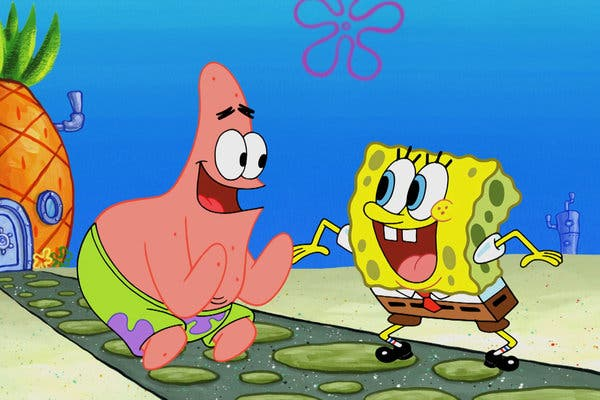

Selamat Datang di Pertemuan 1
Belajar Dasar Pemrograman Web
Memasukkan gambar

Membuat teks berjalan
Memasukkan link redirect ke halaman lain
Masuk ke Google
Masuk ke Facebook
Masuk ke Youtube
Selamat Datang di Pertemuan 2
Belajar Dasar Pemrograman Web
Sebutkan nama hewan dari A sampai H
| Huruf |
Nama Binatang |
Jumlah Kaki |
Makanan |
| A |
Ayam |
Dua |
Beras |
| B |
Buaya |
Empat |
Daging |
| C |
Cacing |
Tidak Ada |
Tidak tahu |
| D |
Domba |
Empat |
Rumput |
| E |
Elang |
Dua |
Daging |
| F |
Tidak tahu |
Tidak tahu |
Tidak tahu |
| G |
Gorila |
Dua |
Daging |
| H |
Hiu |
Tidak Ada |
Daging |
Sebutkan 5 nama kota di Indonesia
- Jakarta
- Bogor
- Bandung
- Padang
- Medan
Sebutkan 5 alat elektronik
- Laptop
- Kulkas
- Televisi
- Radio
- Handphone
Selamat Datang di Pertemuan 3
Belajar Dasar Pemrograman Web
Cerita pengalaman mengikuti Wonderkoding Bootcamp
Selamat Datang di Pertemuan 4
Belajar Dasar Pemrograman Web
Ini adalah gambar seekor Ayam. Ayam adalah hewan berkaki dua yang hidup di daratan.
Ayam biasanya memakan makanan seperti cacing, pur, beras, dan masih banyak lagi.
Aku suka mendengarkan ayam berkokok di pagi hari.
Ini adalah gambar seekor Sapi. ...
Ini adalah gambar seekor Panda. ...